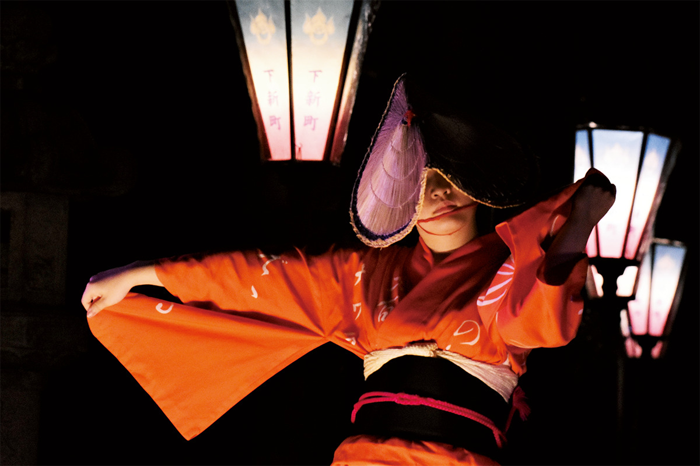
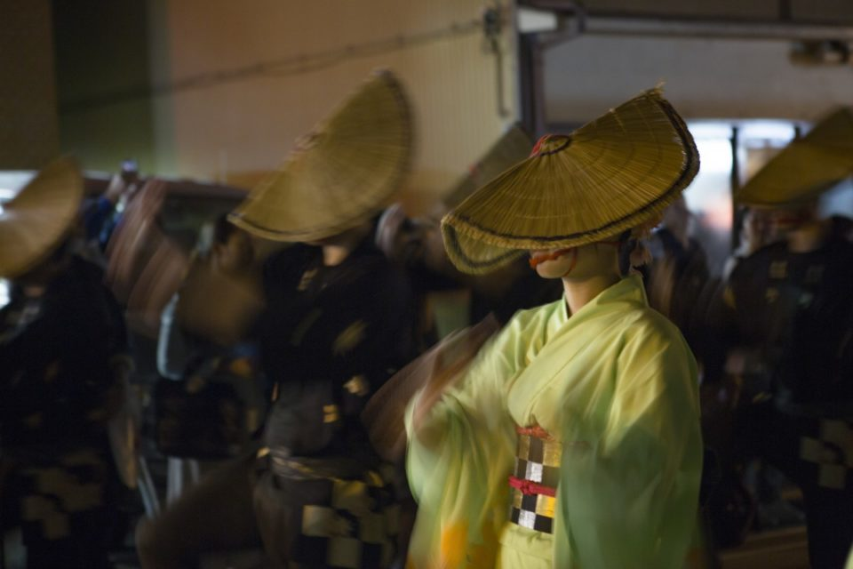
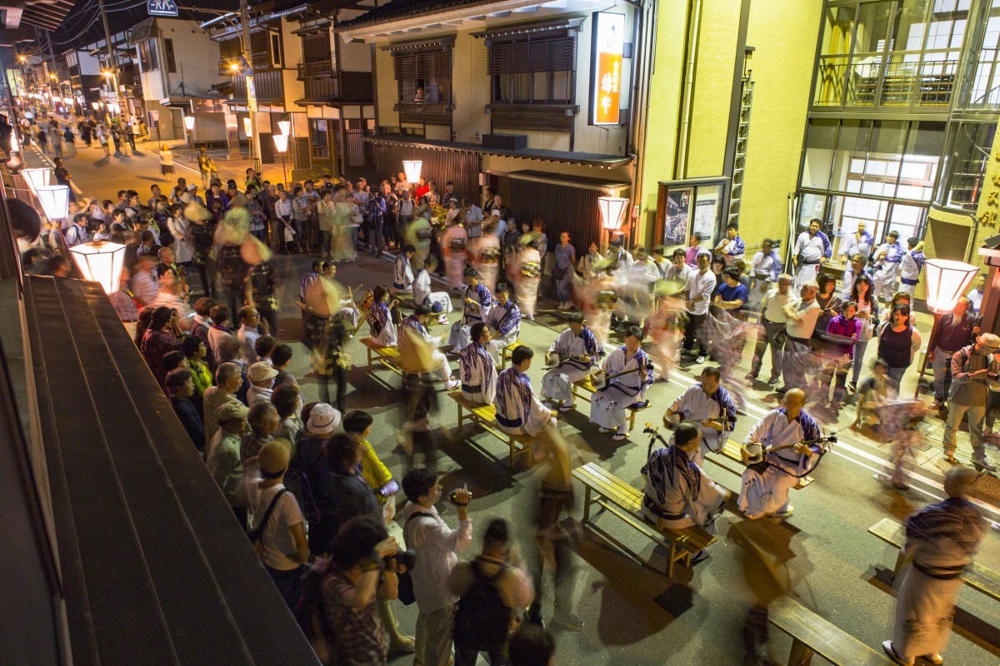
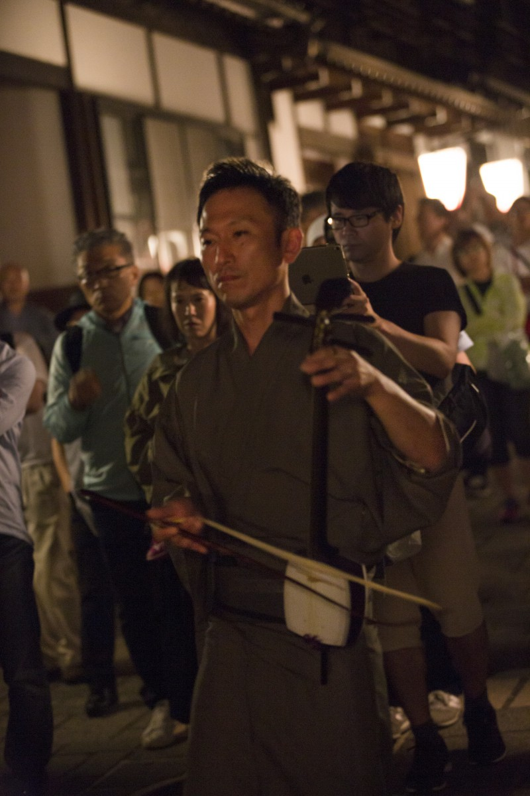
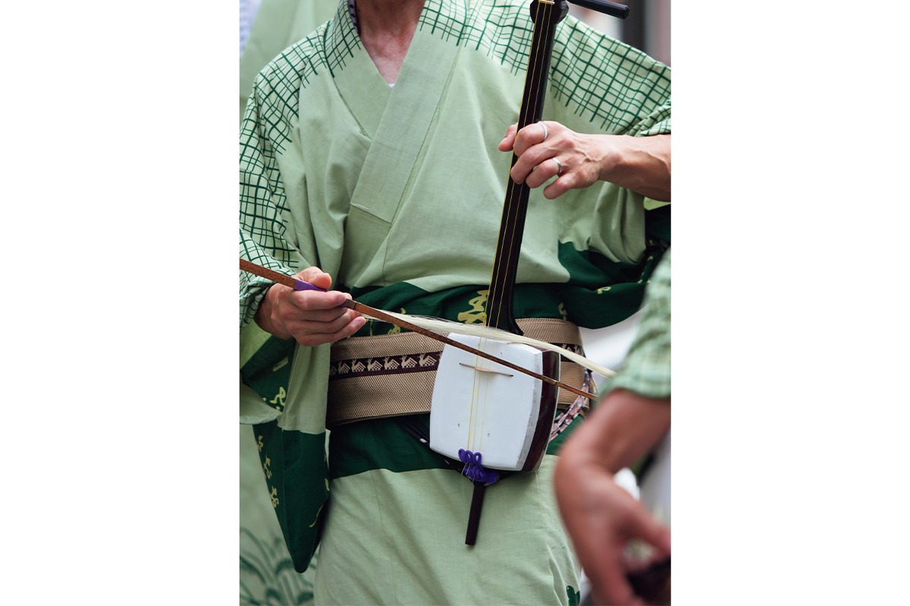
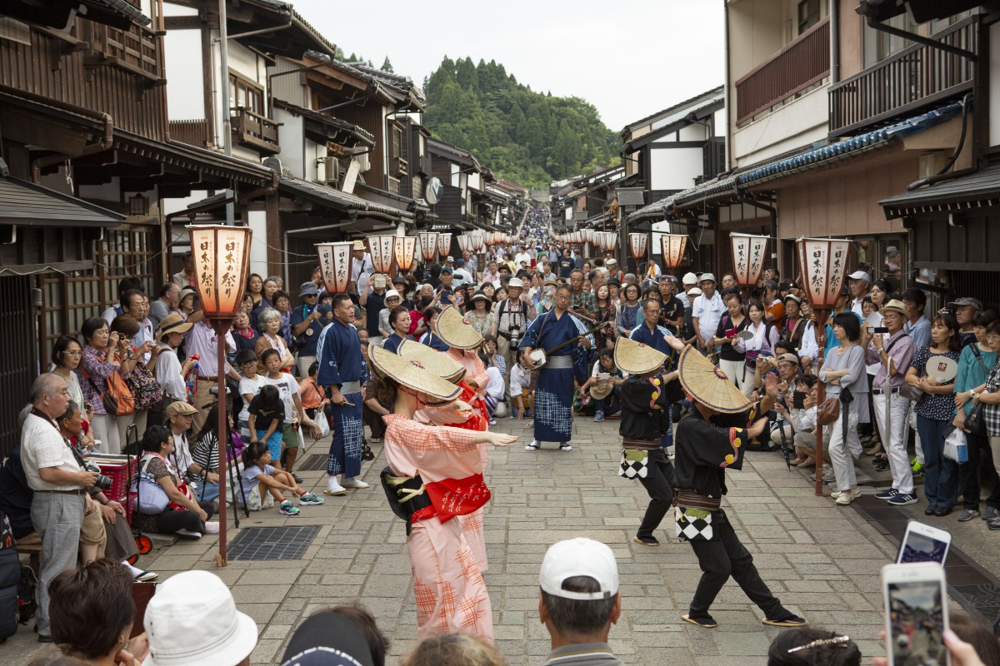
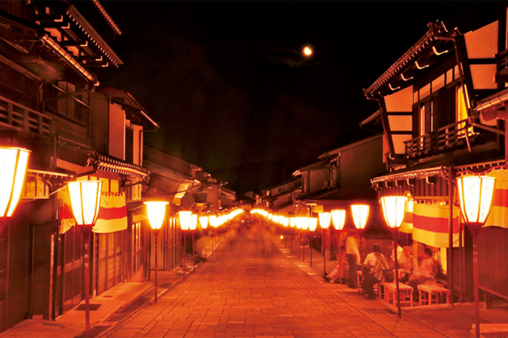
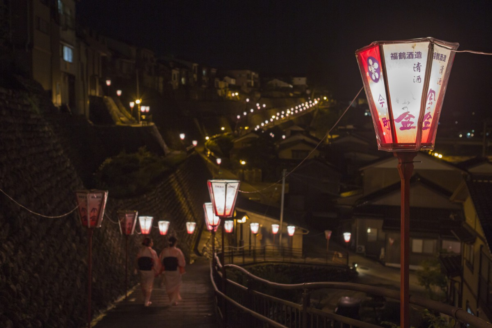
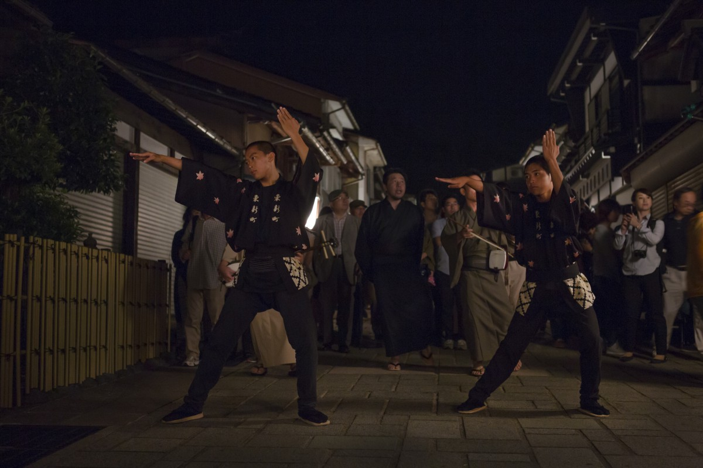

Префектура Тояма · Яцуо · праздник
«Овара кадзэ-но бон»: три сентябрьские ночи, когда Яцуо танцует под звук кокю

Каждый год с 1 по 3 сентября маленький горный городок Яцуо в префектуре Тояма выходит на улицы танцевать. Праздник «Овара кадзэ-но бон» идёт больше 300 лет, и его стоит увидеть хотя бы раз в жизни.
Праздник
Танец, который начинается неизвестно где
С вершины склона, где в темноте тянется цепочка бумажных фонарей, едва слышно доносятся пение и протяжный голос кокю. Если присмотреться, из темноты медленно приближаются танцоры в одинаковых юката. Женщины в глубоко надвинутых плетёных шляпах сгибают колени и выводят плавные, чуть кокетливые линии. Мужчины танцуют рядом, движения у них сильнее, но и в каждом жесте рук есть изящество.

Яцуо, городок в горной долине, входит в город Тояма. Обычно здесь живёт меньше 2500 человек, но с 1 по 3 сентября городок меняется до неузнаваемости: за три дня сюда приезжает около 300 тысяч гостей. Звучит «Эттю овара-буси», протяжная и печальная народная песня. Под неё танцоры идут по городу вместе с музыкантами («матинагаси»), встают в круг («ва-одори») или выходят на специальные сцены («бутай-одори»).
Танцев несколько. Один из старейших, «хонэн-одори», танец урожая: руками и пальцами в нём изображают работу в поле. На сценах показывают «отоко-одори» и «онна-одори», мужской и женский танцы.

Широкую известность праздник получил после любовного романа Осаму Такахаси «Кадзэ-но бон рэнка», а потом помогла и мода на народные песни. Во время праздника к Яцуо подъезжают туристические автобусы, толпы стоят вдоль улиц, и кто-то жалеет, что прежняя тихая атмосфера ушла. Но страсть к «Овара», которую называют душой городка, никуда не делась: её передают из поколения в поколение.
Музыка
Кокю и «дзиката»

Главный звук праздника даёт кокю. Этот инструмент пришёл в «Овара» после 1868 года, и среди традиционных японских инструментов он единственный, у которого звук извлекают, ведя смычком по струнам. Его тоскливый голос стал неотделим от «Овара кадзэ-но бон».

Жители Яцуо весь год репетируют танцы и песни. На самом деле «Овара» устраивают сами 11 отделений старых кварталов городка: по сути, это праздник соседских общин. Перед сентябрём в каждом квартале люди почти каждый вечер собираются в общественном центре на репетиции, и делают это не для зрителей. Танец для себя, ради собственной радости: в этом его главная прелесть.
Поэтому все кварталы никогда не танцуют разом, и, кроме части шествий и выступлений на сцене, никто не знает, где и когда начнётся танец.
Улицы
Сувамати и каменные стены


Сам городок тоже стоит прогулки. Улица Сувамати мощена камнем, вдоль неё стоят дома с белыми стенами, и в сумерках, когда загораются фонари, она особенно хороша.

Совет
Как смотреть «Овара»
Тем, кто едет впервые, рекомендуем начать с дневных танцев. В разных кварталах идут шествия и танцы в кругу, и, если просто бродить по городку, музыка будет слышна то с одной улицы, то с другой.
Когда стемнеет, по Яцуо пробегает тёплый ветер, один за другим загораются фонари, и ожидание зрителей доходит до предела. Говорят, танец вот-вот начнётся в соседнем квартале. Или всё-таки здесь? Слухи бегут по толпе, и даже ждать у обочины, когда же начнут, по-своему приятно.

Официальная программа заканчивается в 23:00, но местные танцуют до рассвета. Настоящее настроение «Овара» приходит за полночь, когда ночь становится глубокой. Ту волшебную картину, с которой начинается этот рассказ, видят многие в воображении, но наяву она достаётся только знатокам или очень везучим. Праздник провожает лето и встречает осень, и Яцуо из года в год прощается с летом танцем.
«Овара кадзэ-но бон»
- Даты
- ежегодно 1–3 сентября
- Адрес
- префектура Тояма, город Тояма, район Яцуо
- Как добраться
- от станции Тояма до станции Эттю-Яцуо около 25 минут поездом JR, от станции идёт автобус (каждые 30 минут); на машине около 30 минут из центра Тоямы, от парковок ходит автобус, на улицах ограничено движение
Фото: Туристическая ассоциация города Тояма, Организация по продвижению туризма Тоямы.